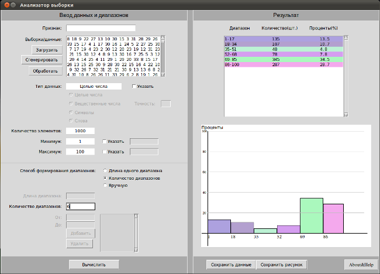
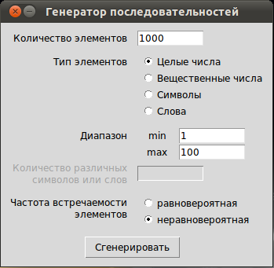

Аннотация
Целью данной работы было создать программу, которая предназначена для первичного анализа выборок различного типа. Программа должна определять распределение элементов выборки по диапазонам (интервалам) в процентном и количественном отношении, строить диаграмму. Количество интервалов или их размер задается пользователем. Данные в программу можно загрузить из текстового файла и просто вставить в текстовое поле. Программа должна уметь определять объем выборки, обрабатывать разные типы данных (числовые и нечисловые), определять их тип, для числовых типов вычислять границы диапазонов. Поскольку разрабатывается тестовый вариант программы, и мы не имеем реальных выборок, то программа включает в себя генератор случайных объектов различного типа (целые числа, вещественные числа, слова, символы), которые она обрабатывает.
Программа была написана на языке программирования Python, для генерации случайных чисел использовался модуль random из стандартной библиотеки данного языка. Для получения неравномерно распределенной выборки были написаны собственные функции. Графический интерфейс был создан с помощью Tkinter.
В результате была получена программа, названная «Анализатор выборки», которая позволяет загрузить или вставить данные для статистического анализа, а также сгенерировать их в случае отсутствия реальных выборок. Загрузив или сгенировав данные, пользователю предлагается указать, к какому из четырех типов данных принадлежит выборка, или программа определяет сама тип данных. После этого следует указать либо размер диапазона, либо их количество, либо ввести вручную границы исследуемых диапазонов. После этого программа выполнит анализ согласно указанным диапазонам. Результат выводится в текстовое поле по столбцам: диапазоны, количество значений попавших в них, процент. Так же на холсте строится график. Полученные данные можно сохранить. Итак, была создана программа, которая позволяет провести начальную обработку данных-выборок.
Проблема
Очень часто в различных сферах деятельности человека требуется выполнить несложный статистический анализ данных, например, найти процентное соотношение различных элементов данных (выборок) или их распределение по диапазонам. Например, найти соотношение возрастных групп на предприятии, определить процентное соотношение различного типа брака той или иной детали и т.п. Также, если представить, как люди, которые не имеют отношения к научному статистическому анализу, собирают данные, то, скорее всего, это будут какие-нибудь текстовые файлы, где через пробел указываются качественные или количественные характеристики объектов выборки. Обычно данные в таком виде сложно или нельзя загрузить в специализированную программу. Хотя программного обеспечения для статистического анализа существует много, обычно оно платное и сложное, следовательно, не подходит для обычных предприятий и организаций. Хорошо бы создать свободно-распространяемую программу, которая позволяет легко загружать статистические данные и быстро их обрабатывать.
Гипотеза
Можно создать такую программу, которая выполняет быстрый анализ разных данных: целых чисел, вещественных чисел, символов или слов. Данные в нее можно загрузить из текстового файла или непосредственно вставить в многострочное текстовое поле. Можно создать алгоритмы, которые будут определять тип данных и анализировать их согласно типу, вычисляя распределение выборки по диапазонам или признакам.
План исследования и методы
Библиография
Программа «Анализатор выборки» предназначена для начальной обработки статистических данных о качественных и количественных признаках объектов. Признаки могут быть представлены целыми числами, вещественными числами, словами или символами. Результатом работы программы являются сведения о распределении данных (выборки) по диапазонам (интервалам) или просто об их количественном соотношении (для нечисловых типов).
Приведем примеры, когда может быть полезна данная программа.
Пример 1. Тип данных – слова. Опрос населения перед выборами о предпочитаемой партии. Полученные данные записываются в виде слов, которые играют роль названия партии. Допустим, было опрошено 5000 человек. Программа покажет процент «проголосовавших» за каждую партию.
Пример 2. Тип данных – символ. Если признак описывается не словом, а одной буквой, то принцип тот же, что в предыдущем примере. Иначе, программа может выполнить частотный анализ. Частотный анализ используется не только для расшифровки кодов простой замены, но и для компрессии текстовых файлов, когда, оценив частоту встречаемости букв в тексте, сжимают файл, используя короткие коды для распространенных букв и длинные коды – для редких.
Пример 3. Тип данных – числовой. Например, надо оценить, сколько тратят граждане на приобретение вычислительной техники и мобильных устройств в год. Допустим, была сделана выборка объемом примерно в 2000 опрошенных человек. Программа определит минимальное значение, например, 1000 руб., максимальное, например, 30 000 руб. Определив диапазоны от 1 000 до 10 000, от 10 000 до 20 000 и от 20 000 до 30 000 с помощью программы мы можем узнать, сколько человек по данному признаку находится в каждом диапазоне.
Основные возможности программы включают (приложение 1):

Кроме всего вышеперечисленного программа включает так называемый «Генератор случайных объектов» (приложение 2). Если нет настоящей выборки или данных, то для тестирования возможностей программы можно получить список случайных объектов. При этом можно выбрать тип данных, будут ли объекты генерироваться равновероятно или нет. Данные, полученные с помощью «генератора», сразу попадают в текстовое поле «анализатора».

Программа написана на языке программирования Python с использованием библиотеки графического интерфейса Tkinter. Поэтому может быть запущена в большинстве операционных систем, содержащих эти компоненты.
Программа написана в виде единого модуля, хотя при желании ее можно разделить на отдельные модули. Это будет целесообразно, т.к. в ней сочетаются разные части: графический интерфейс, алгоритмы первичной обработки данных, алгоритмы анализа распределения данных по интервалам и др. Кроме того, алгоритмы обработки данных разных типов отличаются и были разделены на отдельные функции.
Программа содержит следующие функции:
Поскольку программа содержит графический интерфейс, что предполагает событийно-ориентированное программирование, то последовательность вызова функций не всегда однозначна.
Полученная в результате программа позволяет выполнять некоторый анализ статистических данных: определять объем выборки, минимальное и максимальное значение, интервалы и их количество, интервальное статистическое распределение выборки, строить гистограмму частот.
Работа над данным проектом позволила понять, что для создания такой программы требуются знания не только по программированию, но и по основам статистической обработки данных. Возможно, в дальнейшем программа будет улучшена и в нее будут добавлены дополнительные возможности.